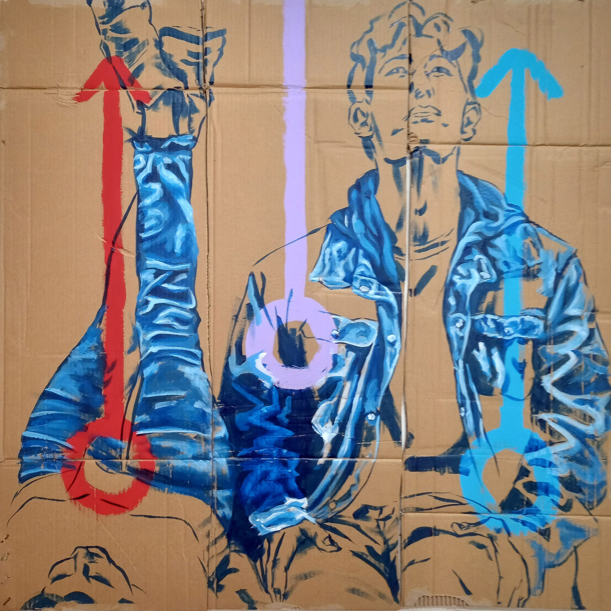

"Atípico", de Maurício Kaschel, explora a neurodiversidade e a introspecção artística no MACC

Mauricio Kaschel explora a neurodiversidade e a introspecção em uma reflexão artística sobre inclusão e identidade no Museu de Arte e Cultura de Caraguatatuba.
A partir de 7 de setembro, o Museu de Arte e Cultura de Caraguatatuba (MACC) recebe a exposição "Atípico", do artista visual Maurício Kaschel, sob curadoria de Cláudia Lopes. A mostra oferece uma visão introspectiva e provocativa sobre a relação entre arte, identidade e neurodiversidade, desafiando normas sociais e celebrando a singularidade de cada indivíduo.
A obra de Kaschel é marcada por sua condição neurodivergente, tendo sido diagnosticado no Espectro Autista aos 35 anos. Sua prática artística se apresenta como um caminho de autoconhecimento, onde a arte se torna uma poderosa ferramenta de expressão, desafiando expectativas sociais e propondo uma nova leitura sobre a inclusão e a diversidade humana. "Atípico" reflete a complexidade da experiência individual de Kaschel, ao mesmo tempo em que aborda temas universais como autenticidade, autoaceitação e a busca por um lugar no mundo.
A exposição "Atípico" traz uma série de obras em papelão, material rústico e imperfeito que simboliza a realidade bruta da vida cotidiana. Kaschel utiliza uma paleta predominantemente monocromática, onde as figuras solitárias e meditativas que preenchem suas composições convidam o público a refletir sobre a experiência humana e os desafios enfrentados por aqueles que não se encaixam nos padrões de normalidade impostos pela sociedade.
O papelão, com suas camadas e texturas, se torna um espelho da condição humana. Cada corte e cada vinco no material revelam as "cicatrizes" da existência, representando a trajetória pessoal do artista. Kaschel explora a materialidade desse suporte para construir figuras introspectivas, cujas poses meditativas comunicam uma sensação de isolamento e introspecção, mas também de resistência e aceitação.
Para a curadora Cláudia Lopes, a exposição é um "manifesto visual" que questiona os conceitos de normalidade e anormalidade. "Ao desvendar os mistérios do papelão e da cor, o artista nos convida a olhar além das aparências e a reconhecer a beleza na diversidade humana", comenta Lopes. A mostra, portanto, não apenas destaca a singularidade de Kaschel como artista, mas também propõe um diálogo mais amplo sobre as relações humanas e a inclusão no contexto da arte contemporânea.
A neurodivergência de Kaschel não é apenas um tema subjacente em seu trabalho; é uma parte essencial de sua prática. Diagnosticado com autismo de nível 1, o artista encontrou na arte uma forma de explorar e expressar sua identidade, fugindo das normas sociais que frequentemente buscam conformidade. "Atípico" é uma afirmação de sua singularidade, abordando a diversidade neurológica como algo a ser celebrado, e não escondido.
Cada uma de suas obras reflete o processo de autoconhecimento que acompanha sua jornada criativa. Kaschel usa a arte como uma forma de autorreflexão e como uma maneira de navegar pelas complexidades das interações sociais e das expectativas culturais. Suas figuras solitárias, em poses contemplativas, são espelhos de sua experiência pessoal, mas também podem ser vistas como representações universais da busca por autenticidade e aceitação.
A exposição também explora temas mais amplos da condição humana, como a relação entre solitude e criatividade. A introspecção que marca o trabalho de Kaschel revela as múltiplas camadas da experiência individual e coletiva, desafiando o espectador a reconsiderar suas próprias percepções sobre inclusão, identidade e arte.
A técnica de Maurício Kaschel é autodidata, caracterizada pela experimentação e pela meticulosa atenção aos detalhes. Utilizando o papelão como suporte principal, o artista cria uma conexão íntima com a materialidade de suas obras, refletindo a imperfeição e a fragilidade da vida humana. A paleta monocromática que ele adota intensifica o diálogo entre luz e sombra, criando uma atmosfera de profundidade e mistério.
A curadora Cláudia Lopes observa que o trabalho de Kaschel é "uma dança entre luz e sombra, um eco das palavras não ditas que reverberam na memória do observador". Nas profundezas dos tons de azul, por exemplo, o artista encontra segredos antigos e mistérios que ecoam o vasto universo interior de suas figuras. Cada obra é uma exploração sensorial, convidando o público a uma experiência visual e emocional profundamente imersiva.
"Atípico" se destaca como um grito de liberdade em um mundo que frequentemente tenta moldar as pessoas de acordo com padrões predefinidos. O trabalho de Kaschel desafia essas normas, celebrando a diversidade em todas as suas formas. Em vez de buscar a conformidade, o artista valoriza a autoaceitação e convida o público a fazer o mesmo.
A exposição não é apenas uma mostra de arte, mas uma oportunidade para refletir sobre a inclusão e a neurodiversidade. "Atípico" celebra a pluralidade humana, oferecendo uma visão profunda e sensível sobre o papel da arte como meio de expressão e resistência.
Nascido em Campinas, São Paulo, Maurício Kaschel iniciou sua trajetória artística aos 12 anos, com uma exposição no Hospital de Câncer Infantil Boldrini, onde foi tratado de uma condição grave de saúde. Graduado em Cinema pela Faculdade de Cinema e Mídias Digitais, dedicou uma década ao audiovisual, atuando como roteirista e colorista. Após publicar livros infantis e infantojuvenis e atuar como professor de artes, Kaschel redirecionou seu foco para as artes visuais em 2022.
Seu trabalho foi reconhecido em 2023 com o prêmio do 45° Salão de Artes Plásticas Waldemar Belisário, e ele participou de uma residência artística no Ateliê Ziriguidum, em Poços de Caldas. Suas obras foram exibidas em mostras individuais e coletivas, incluindo o Salão de Arte UNIVAP (2024) e a XX Mostra de Arte do Vale do Paraíba (2024).
A exposição "Atípico" é uma oportunidade única para o público se engajar com questões fundamentais sobre identidade, diferença e inclusão, através do olhar sensível e da técnica singular de Maurício Kaschel.